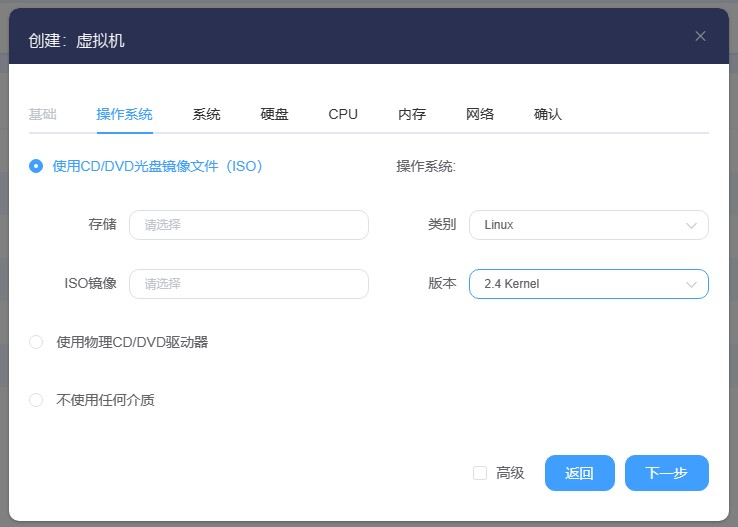
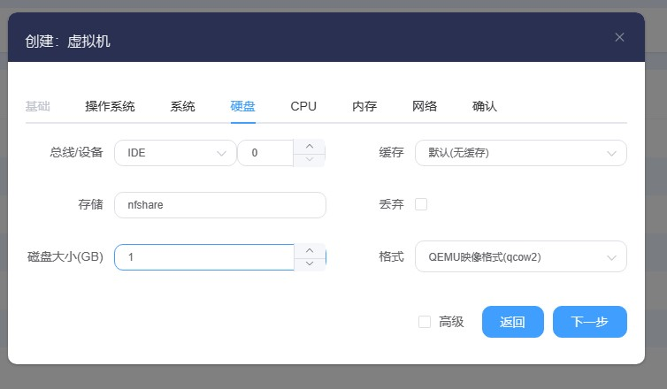
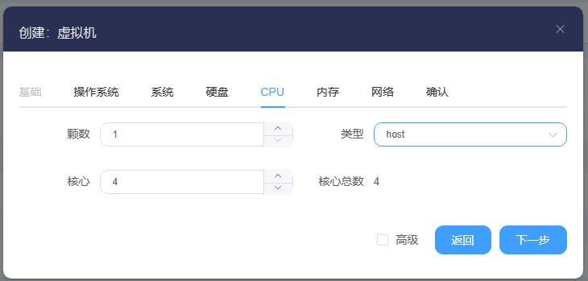
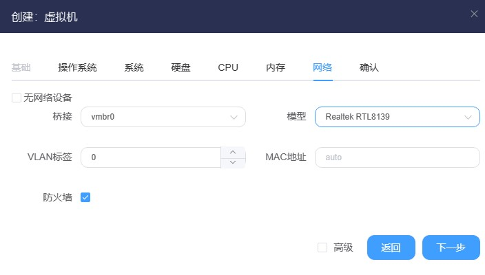
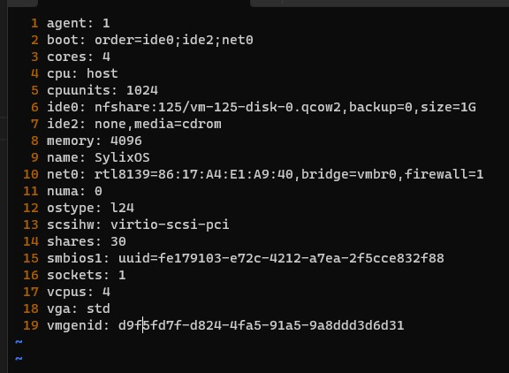
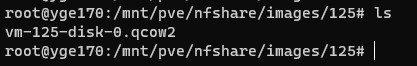

YEGCloud SylixOS安装方法
2022-02-22 • SylixOS-云 • Cmd •#前言
在工作中客户使用的云方案为YEGCloud，在YGECloud中无法直接通过bin文件或者ELF文件来固化 SylixOS 镜像。
最终通过安装 VMware 版本 SylixOS 来解决这个问题，这里对具体方法进行记录。
#方法
1.将SylixOS传到服务器解压SylixOS VMware版，找到其中的 x86_boot.vmdk, x86_main.vmdk
2.将这两个文件上传到服务器，使用qemu-img命令将vmdk虚拟机磁盘转为qcow2格式
qemu-img convert -f vmdk -O qcow2 x86_boot.vmdk x86_main.qcow2 qemu-img convert -f vmdk -O qcow2 x86_boot.vmdk x86_boot.qcow23.切换到虚拟化服务器web界面，创建新虚拟机
a.操作系统类型：Linux kernel 2.4，不使用任何光盘介质

b.创建IDE硬盘，硬盘大小根据需求选择

c.配置CPU，内核数量根据自己需求而定，类型为host

d.修改网络模型，如果网卡不可用，尝试修改为其他模型

4.创建虚拟机的步骤完毕，现在连接到服务器的shell，可以使用web shell或另行连接
# 进入到虚拟机配置文件目录 cd /etc/pve/qemu-server/ # 编辑刚刚创建的ID为125的虚拟机所属配置文件 vim 125.conf原配置文件如下：

5.修改第6行ide0开头的内容如下
ide0: nfshare:125/x86_boot.qcow2 ide1: nfshare:125/x86_main.qcow2 # 注意！ # 其中，ide0 ide1务必不要重复，以免冲突 # 其中，nfshare为我虚拟化服务器所在的存储名称，实际名称以实际为准！6.修改完毕后，先删除现有的文件，将刚刚转化完毕的两个qcow2文件移动到虚拟机磁盘映像所在目录

如 /mnt 目录下没有 ID 编号文件，检测根目录下是否有Vmdata文件夹。之后按照同样的方式操作。
7.随后打开web界面，启动虚拟机即可！
原创内容使用 知识共享 署名-非商业性使用-相同方式共享 4.0 (CC BY-NC-ND 4.0) 协议授权。